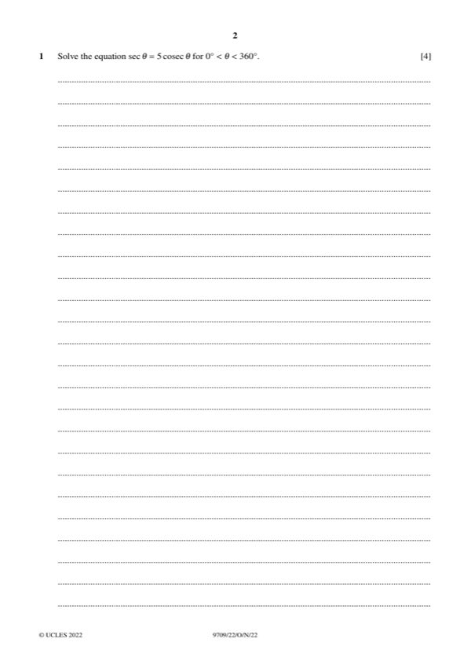
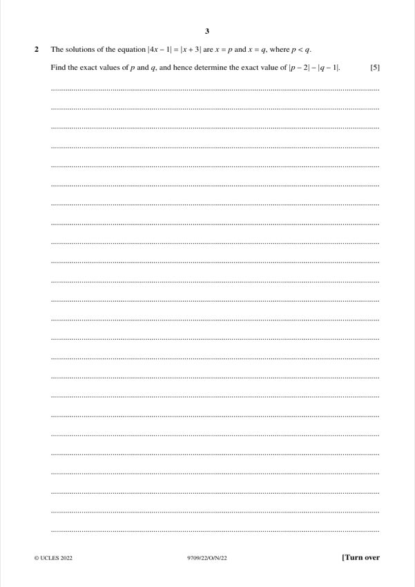
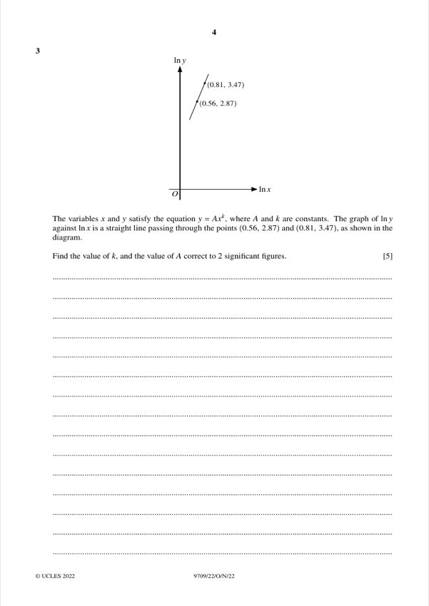
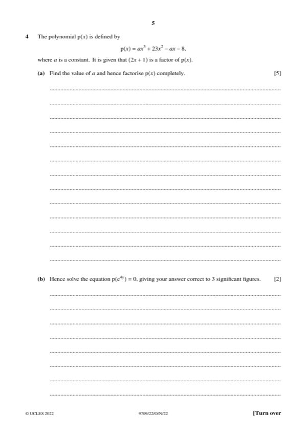
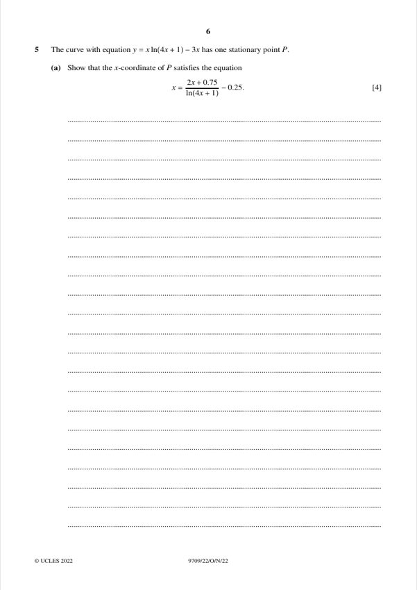
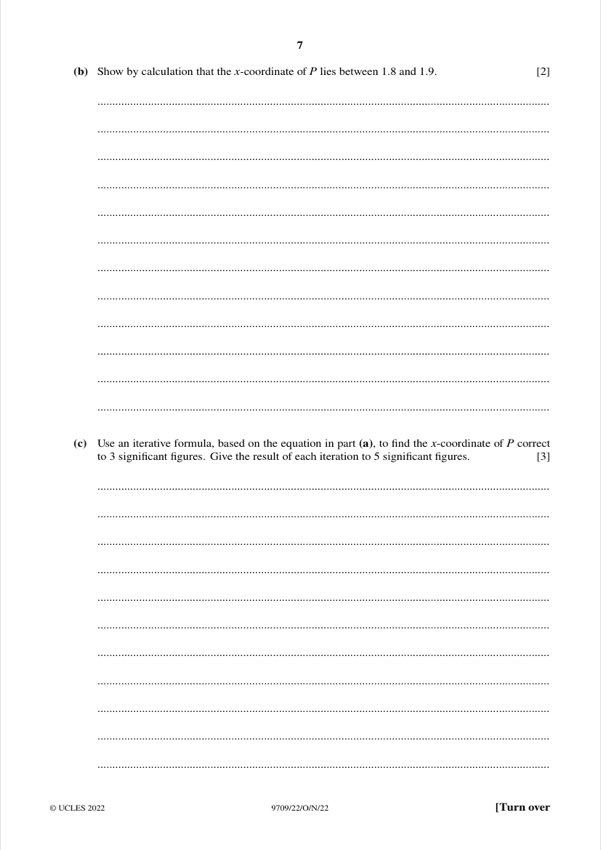
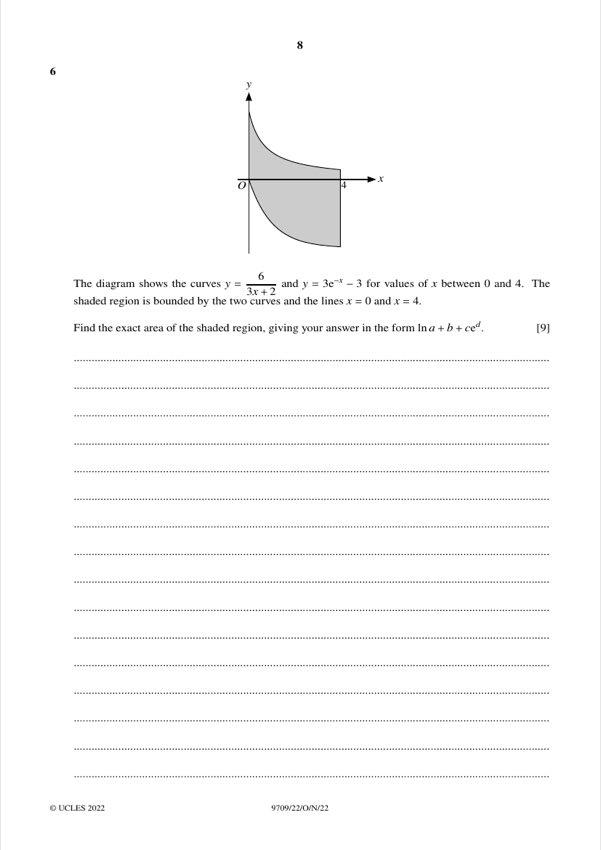
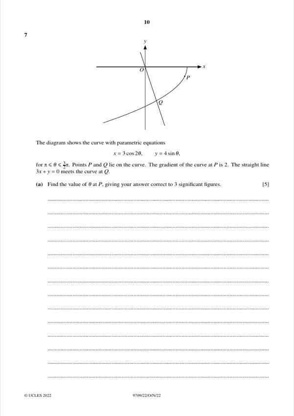
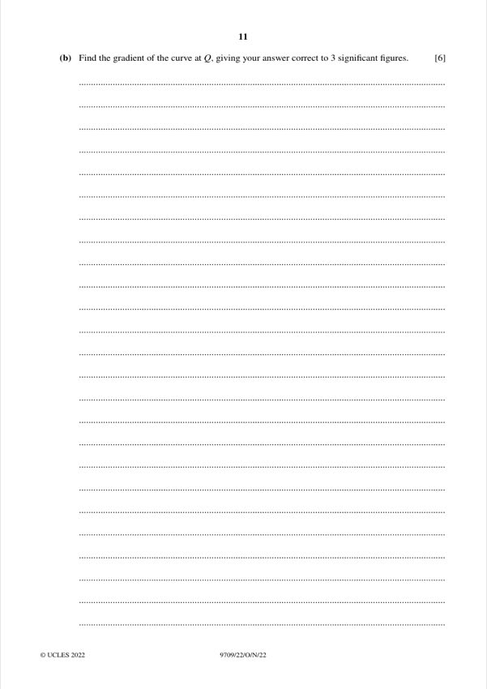

Question 1 [4]

Original paper page 2
Solve sec θ = 5 cosec θ for 0° < θ < 360°.
1/cosθ = 5/sinθ → sinθ = 5cosθ → tanθ = 5
θ = 78.7° or θ = 180° + 78.7° = 258.7°
θ = 78.7°, 258.7°
Mathematics Paper 2 (Pure Mathematics 2)

Solve sec θ = 5 cosec θ for 0° < θ < 360°.
θ = 78.7°, 258.7°

The solutions of |4x − 1| = |x + 3| are x = p and x = q, where p < q. Find the exact values of p and q, and hence the exact value of |p − 2| − |q − 1|.
p = −2/5, q = 4/3, value = 31/15

y = Axᵏ. The graph of ln y against ln x passes through (0.56, 2.87) and (0.81, 3.47). Find k and A correct to 2 s.f.
k = 2.4, A = 4.6

(a) [5] p(x) = ax³ + 23x² − ax − 8, with (2x + 1) a factor. Find a and factorise p(x) completely.
a = 6, p(x) = (2x + 1)(3x − 2)(x + 4)
(b) [2] Hence solve p(e⁴ʸ) = 0 to 3 s.f.
y = −0.101

(a) [4] y = x ln(4x + 1) − 3x has one stationary point P. Show that x = (2x + 0.75)/ln(4x + 1) − 0.25.
Shown

(b) [2] Show that the x-coordinate of P lies between 1.8 and 1.9.
Shown
(c) [3] Use the iterative formula to find x to 3 s.f. (5 s.f. for each iteration).
x = 1.83

The curves y = 6/(3x + 2) and y = 3e⁻ˣ − 3 for 0 ≤ x ≤ 4. The shaded region is bounded by the curves and x = 0, x = 4. Find the exact area in the form ln a + b + c eᵈ.
Area = ln 49 + 9 + 3e⁻⁴

x = 3cos2θ, y = 4sinθ for π ≤ θ ≤ 3π/2. Gradient at P is 2. Find θ at P to 3 s.f.
θ = 3.31

The line 3x + y = 0 meets the curve at Q. Find the gradient of the curve at Q to 3 s.f.
Gradient at Q = 0.551